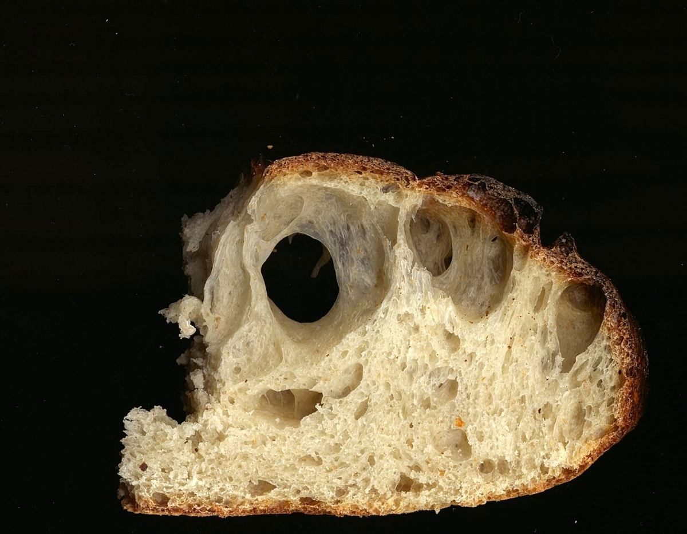

牛蒡茶
cafe
③
トップ
ホーム
④
ボディ
メニュー
⑤
脚
口コミ
⑥
オモリ
お店のこと
②
ウキ止め
アクセス
②
ウキ止め
位置を決める、小さな留め。
所在地
住所
〒409-3701 山梨県笛吹市芦川町上芦川303
電話
準備中
営業時間・定休日
準備中
駐車場
準備中
Instagram
@goboucha_cafe
積まれたコーヒー豆

パンの断面(黒背景)
一部の写真はフリー素材のイメージです。実際の店内・商品写真は貴店ご提供のものに差し替えます